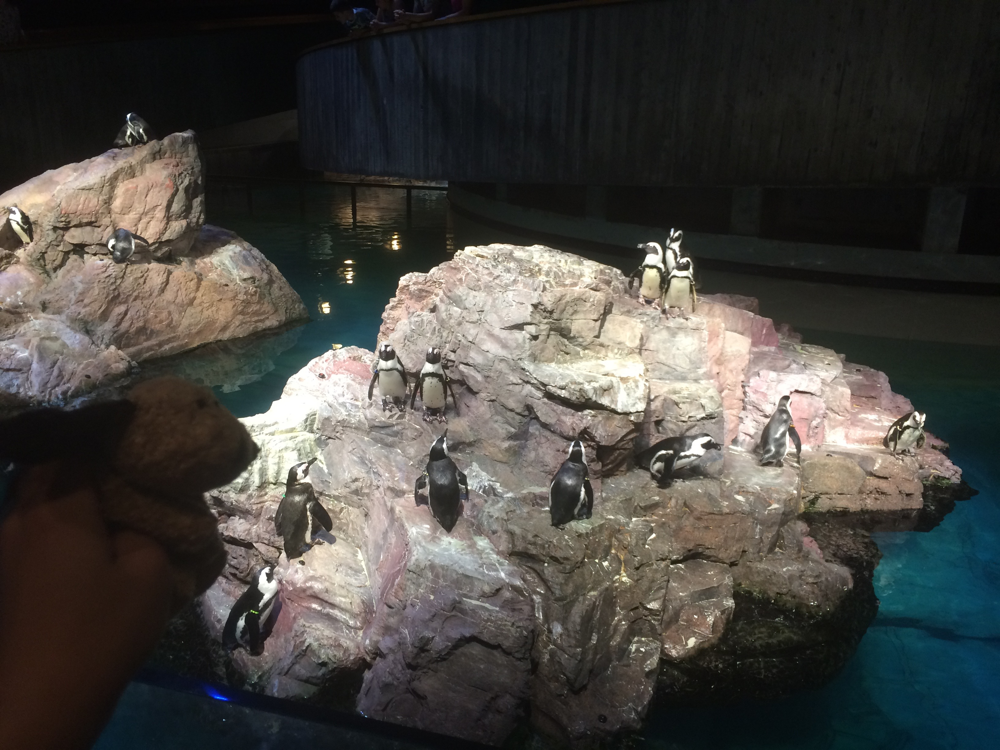

BIOLOGY TERM SCAVENGER HUNT
by Winnie Chan
1 / 50

2 / 50

3 / 50
4 / 50
5 / 50

6 / 50
7 / 50
8 / 50

9 / 50

10 / 50
11 / 50
12 / 50
13 / 50

14 / 50

15 / 50

16 / 50

17 / 50
18 / 50

19 / 50

20 / 50

21 / 50

22 / 50

23 / 50

24 / 50

25 / 50
26 / 50

27 / 50

28 / 50

29 / 50
30 / 50

31 / 50

32 / 50

33 / 50

34 / 50

35 / 50
36 / 50

37 / 50

38 / 50

39 / 50

40 / 50

41 / 50

42 / 50

43 / 50

44 / 50

45 / 50

46 / 50
47 / 50

48 / 50
49 / 50

50 / 50
1
2
3
4
5
6
7
8
9
10
11
12
13
14
15
16
17
18
19
20
21
22
23
24
25
26
27
28
29
30
31
32
33
34
35
36
37
38
39
40
41
42
43
44
45
46
47
48
49
50